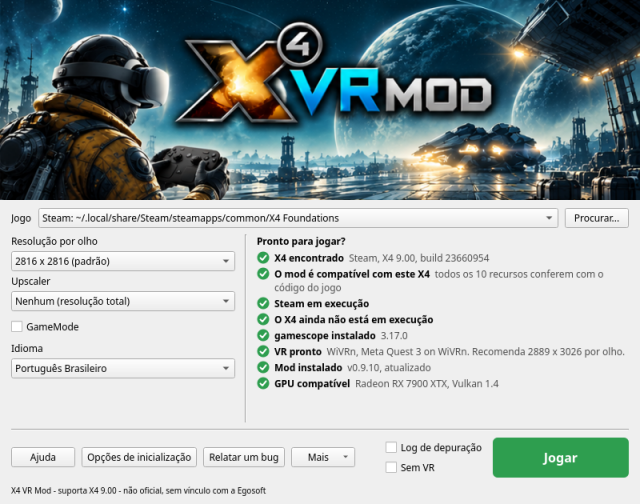
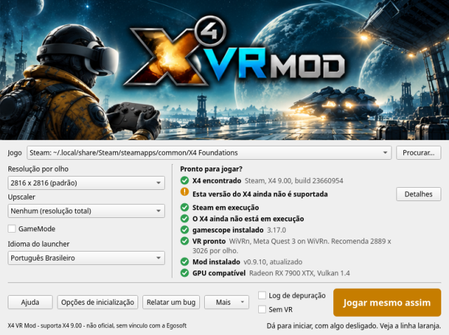
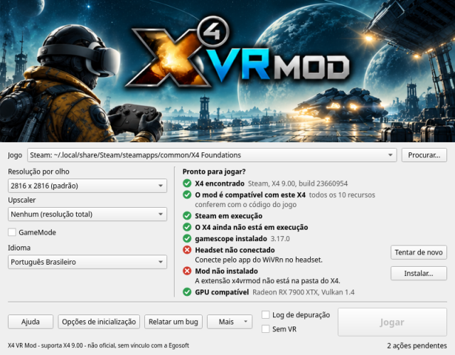
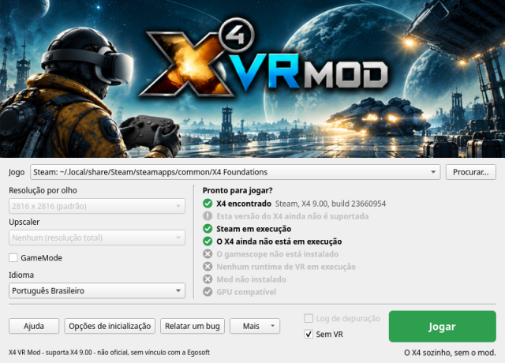
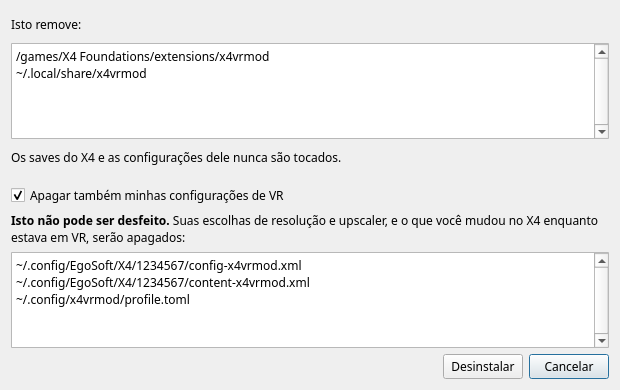
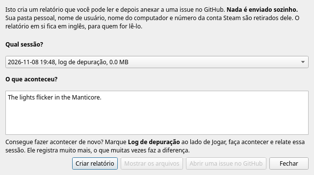

Esta janela encontra o X4: Foundations, instala o mod, diz se está tudo pronto e inicia o jogo em VR. Deixe o ponteiro sobre qualquer coisa na janela para ver uma explicação curta. Esta página tem o resto.
Primeiros passos | Jogo | Resolução por olho | Configurações por headset | Upscaler | GameMode | Idioma do launcher | Distância entre os olhos | Jogar | Sem VR | A lista de verificação | Opções de inicialização | Instalar | Desinstalar | Mais | WiVRn ou SteamVR? | Solução de problemas | Relatar um bug

A lista de verificação se atualiza sozinha, então não é preciso reabrir nada depois de iniciar o runtime ou conectar o headset.
A cópia do X4 a usar. O launcher pergunta à Steam qual das suas bibliotecas tem o X4, e procura na lista de jogos do GOG do Heroic e em ~/GOG Games. Se a sua não aparecer, clique em Procurar... e escolha o programa chamado X4.
Tem que ser a versão para Linux. O mod altera o programa Linux do X4 enquanto ele roda, e se liga ao renderizador Vulkan dele pelos mecanismos do próprio Linux. A versão para Windows rodando no Proton é outro programa, então, se você escolher o X4.exe, o launcher avisa que não dá para funcionar. Se a Steam estiver configurada para forçar o Proton no X4, desative isso nas Propriedades do X4, em Compatibilidade, e deixe a Steam baixar a versão para Linux.
GOG: o launcher a encontra, e tudo funciona como na cópia da Steam. Escolha-a na caixa Jogo se você tiver as duas.
A Steam instalada como Flatpak não é suportada, e isso não está nos planos por enquanto. A sandbox dela não alcança as partes do mod nem o gamescope, e a VR dentro dela é mais difícil para qualquer jogo: ela só alcança o Flatpak do próprio WiVRn, e o SteamVR roda ali com desempenho reduzido. Se os jogadores pedirem, isso pode mudar; diga isso numa issue.
O launcher marca uma cópia do X4 instalada pela Steam em Flatpak. Use a Steam dos pacotes da sua distribuição, ou uma cópia do GOG, que não precisa da Steam.
O tamanho da imagem feita para cada olho. Aqui o olho é sempre quadrado. Maior é mais nítido, e sua GPU precisa desenhá-la duas vezes, uma para cada olho.
Por que ela é escolhida aqui e não no X4: as imagens do mod e a tela do gamescope são dimensionadas quando o jogo inicia, e o X4 aplica na hora o que se escolhe no menu dele, o que quebra uma sessão em andamento. Por isso ela é escolhida antes de iniciar.
Com o headset conectado, a lista marca o tamanho mais próximo do que o seu headset pede. Essa é a recomendação do runtime, que já leva as lentes em conta, e costuma ser maior que a tela do headset.
Acima de 4068 por olho, a visão 3D do mapa fica plana em vez de ter profundidade, por causa de como o X4 guarda imagens grandes na memória. Com o SteamVR, 4224 já mostrou uma imagem embaralhada; se isso acontecer, diminua.
Pontos de partida, calculados a partir da tela de cada headset. Médio é a imagem nítida a custo total. Baixo é o mesmo tamanho com upscaler, então o X4 desenha menos da metade dos pixels. Alto é uma imagem maior com upscaler, então o X4 desenha mais ou menos o mesmo que no Médio, e o upscaler e a imagem maior custam um pouco mais por cima.
| Headset | Tela, por olho | Baixo | Médio | Alto |
|---|---|---|---|---|
| Meta Quest 3 | 2064 x 2208 | 2816 + FSR 1 Qualidade | 2816 | 4224 + FSR 1 Qualidade |
| Steam Frame | 2160 x 2160 | 2816 + FSR 1 Qualidade | 2816 | 4224 + FSR 1 Qualidade |
| Pico 4 | 2160 x 2160 | 2816 + FSR 1 Qualidade | 2816 | 4224 + FSR 1 Qualidade |
| Meta Quest 3S | 1832 x 1920 | 2400 + FSR 1 Qualidade | 2400 | 3600 + FSR 1 Qualidade |
| Meta Quest 2 | 1832 x 1920 | 2400 + FSR 1 Qualidade | 2400 | 3600 + FSR 1 Qualidade |
| Valve Index | 1440 x 1600 | 2048 + FSR 1 Qualidade | 2048 | 3072 + FSR 1 Qualidade |
| HTC Vive Pro | 1440 x 1600 | 2048 + FSR 1 Qualidade | 2048 | 3072 + FSR 1 Qualidade |
| HTC Vive | 1080 x 1200 | 1600 + FSR 1 Qualidade | 1600 | 2400 + FSR 1 Qualidade |
Só o Médio e o Alto do Quest 3 foram jogados, no WiVRn com uma Radeon RX 7900 XTX. O resto é a mesma regra aplicada à tela de cada um. Se você testar algum, o que descobrir é bem-vindo num relato de bug.
Um upscaler deixa o X4 desenhar uma imagem menor e a amplia, em troca de um pouco de nitidez. Com um ativo, o "Renderiza" embaixo da lista diz o tamanho que o X4 realmente desenha.
A escolha automática: passar de 3200 por olho com Nenhum seleciona o FSR 1 Qualidade, porque desenhar tantos pixels duas vezes é mais do que a maioria das GPUs faz com fluidez. Uma nota avisa, e você pode escolher Nenhum de novo para desfazer. Uma escolha feita por você nunca é mudada, e voltar a 3200 ou menos só retorna a Nenhum se foi o launcher que escolheu.
Se o Feral GameMode estiver instalado, esta caixa aparece. Marcada, ela dá prioridade ao jogo sobre o resto do sistema enquanto ele roda, o que costuma render alguns quadros por segundo a mais. Vale seja qual for a forma de iniciar o jogo: Jogar, Sem VR, a linha de inicialização da Steam ou um terminal. Se ele não estiver instalado, a caixa não aparece e nada muda.
Esta janela e esta ajuda começam no idioma do seu sistema quando ele é inglês, português brasileiro, francês, russo ou alemão, e em inglês nos outros casos. A lista Idioma do launcher, abaixo do GameMode, muda isso, e sua escolha fica guardada. O X4 em si continua no idioma que você escolheu para ele no X4 ou na Steam.
As traduções são um primeiro rascunho, feito com cuidado mas sem revisão. Se uma palavra estiver errada ou soar estranha, correções são bem-vindas como pull request ou como comentário numa issue. Um relato de bug, e o que o comando x4vrmod mostra, ficam em inglês, para que quem for lê-los consiga.
Não há nada a configurar: o mod pega a distância entre os seus olhos do headset, desde o primeiro quadro. Gire o ajuste de IPD do próprio headset e o mundo acompanha enquanto você joga.
Para substituí-la, se o mundo parecer pequeno ou grande demais, informe a sua própria distância em metros. Um óptico ou um app de celular pode medi-la. Ela vale a partir da próxima vez que você iniciar o jogo, e fica até você tirá-la:
x4vrmod config set ipd 0.0635
Essa é de 63,5 mm. Para voltar à do headset:
x4vrmod config unset ipd
Enquanto houver uma substituição, o mundo não acompanha mais o ajuste do headset. Se o headset informar uma distância que nenhum par de olhos poderia ter (fora de 50 a 80 mm), o mod não acredita, mantém a última boa ou então 64 mm, e registra isso no log.
"Jogar" verde: está tudo pronto.
"Jogar mesmo assim" laranja: o jogo pode iniciar, mas algo não vai funcionar. A linha laranja diz o quê. Isso acontece principalmente depois de uma atualização do X4.

"Jogar" cinza: ainda não dá para iniciar. Uma linha vermelha diz por quê, geralmente com um botão que resolve.

Enquanto o jogo roda, o botão diz "X4 em execução" e o launcher não atrapalha. Depois, uma linha conta como foi a sessão.
Marque Sem VR para iniciar o X4 sozinho, na sua tela, do jeito que ele inicia sem o mod, mesmo com a VR rodando. Nada do mod é carregado e a extensão dele fica desligada, então valem as suas próprias configurações e saves, e as linhas que só importam ao mod ficam cinza.

É uma referência: se algo também der errado assim, não é o mod, e isso é muito útil de dizer num relato de bug.
O launcher encontrou uma cópia Linux do X4 e leu a versão dela. Veja Jogo se não encontrou.
Vários recursos do mod alteram o código do X4 na memória, então precisam exatamente do código para o qual foram escritos. Em vez de comparar um checksum, que rejeitaria um pequeno hotfix que não mexe em nada do que tocamos, o launcher roda as próprias verificações do mod no arquivo do X4, recurso por recurso.
Se esta linha estiver laranja, os recursos listados se desligam por segurança, e o jogo continua rodando. Depois de uma atualização do X4, espere uma nova versão do mod, ou jogue com eles desligados.
A versão Steam do X4 precisa da Steam aberta, porque o X4 pede a ela a sua conta ao iniciar. Uma cópia do GOG não precisa, e esta linha não aparece.
O mod precisa estar lá desde o momento em que o X4 inicia, então uma cópia que já está aberta precisa ser fechada antes.
O gamescope dá ao X4 uma tela virtual do tamanho certo para os dois olhos, seja qual for a resolução da sua área de trabalho. É um programa separado; instale-o pelos pacotes da sua distribuição.
O launcher pergunta rapidamente ao seu runtime de VR, pelo OpenXR, se há um headset, sem iniciar uma sessão de VR, o que é mais confiável do que procurar programas em execução.
As partes do mod, que o Instalar... coloca no lugar juntas. Uma fica entre o X4 e a sua GPU e faz as imagens dos dois olhos, e só é carregada quando o mod pede, então nenhum outro programa é afetado. A outra é uma pequena extensão do X4 na pasta extensions do X4, que deixa sua cabeça virar mais do que o X4 normalmente permite e tira o balanço da câmera. "Desatualizado" quer dizer que elas são de outra versão que não a deste launcher; o Instalar... as substitui.
O mod desenha os dois olhos numa só passada com um recurso do Vulkan chamado multiview, e precisa do Vulkan 1.2 e de um descriptor set livre. Quase qualquer GPU dos últimos anos tem isso. Se esta linha estiver vermelha, atualize primeiro o driver de vídeo.
Opções de inicialização mostra a linha exata para a sua cópia, com um botão Copiar. Jogar é o jeito mais simples, e estas são para quando você prefere iniciar pela Steam ou por um terminal. As duas rodam o mod do mesmo jeito que Jogar, com as configurações desta janela.
A Steam troca %command% pelo próprio comando dela para o X4, e o x4vrmod run inicia o X4 com esse comando, então ele precisa estar lá. Com essa linha definida, a Steam sempre inicia o X4 em VR, então apague-a para voltar a jogar sem VR.
Se a Steam estiver configurada para rodar o X4 pelo Proton, a linha se recusa a iniciar e diz por quê, porque o mod só funciona com a versão para Linux. A Steam instalada como Flatpak não é suportada: veja A Steam em Flatpak.
O botão Instalar... aparece na linha da lista de verificação que ele resolve. Numa instalação pelo zip, ele copia o mod para ~/.local/share/x4vrmod e registra a camada Vulkan dele só para você, então você pode apagar a pasta descompactada e a linha de inicialização da Steam continua funcionando. Numa instalação por pacote, isso já está no lugar. Em qualquer caso, ele coloca a extensão na pasta do X4.
O que ele faz com os seus saves: o X4 marca como modificados os saves feitos com uma extensão que não é da Egosoft. A extensão do mod só fica ativa nas sessões em VR, então jogar sem VR não é afetado.
Suas configurações: o config.xml do próprio X4 nunca é gravado. Em VR o mod mantém cópias próprias ao lado dele, chamadas config-x4vrmod.xml e assim por diante, então o que você muda em VR fica em VR e o seu jogo sem VR mantém as configurações dele. A única coisa que ele não copia é a escala da interface do X4, que ele começa em 0,6, porque o 1,0 do próprio X4 é grande demais num headset. Você ainda pode mudá-la nas opções do X4.
Fica em Mais, para não ser clicado sem querer. Ele lista tudo o que vai remover antes de remover, e só remove os arquivos do próprio mod. Os saves do X4 e as configurações dele nunca são tocados.

A caixa Apagar também minhas configurações de VR vem desmarcada. Deixe-a assim se você talvez volte. Marcada, suas configurações de VR nas pastas de perfil do X4 e as escolhas desta janela são apagadas, e isso não pode ser desfeito.
Um pacote continua instalado até você removê-lo com o seu gerenciador de pacotes.
Abrir logs: cada sessão grava o próprio log em ~/.local/state/x4vrmod/logs (em $XDG_STATE_HOME, se você o definiu), e os 20 mais recentes são mantidos. O de uma execução de depuração termina em -debug.log. Um relato de bug precisa do log da sessão que deu errado.
Adicionar ao menu de aplicativos: para o zip, depois de instalado. Um pacote já tem a entrada dele.
Avançado: o campo de visão do X4, e variáveis de ambiente extras para testar o que um relato de bug pedir. Você não precisa disso para jogar.
Restaurar padrões: volta as configurações desta janela ao padrão, e mantém o jogo e o idioma que você escolheu.
Sobre: a versão e a licença. Este é um mod não oficial, sem vínculo com a Egosoft e sem endosso dela.
Sugerimos o WiVRn. No mesmo headset ele dá uma imagem mais nítida que o SteamVR, cuja imagem costuma ser fluida mas mais borrada, e deixa você escolher o codec de vídeo. O SteamVR também já mostrou uma imagem embaralhada em 4224 por olho, onde o WiVRn fica limpo.
O WiVRn transmite para headsets autônomos, como o Quest e o Pico. Um headset ligado por cabo ao PC, como um Valve Index ou um HTC Vive, não transmite, então usa o SteamVR.
No WiVRn, o codec de vídeo é o que mais faz diferença. Você o escolhe nas configurações do WiVRn.
| Codec | O que esperar |
|---|---|
| AV1, via VAAPI | Parece ser o melhor: imagem nítida com latência mínima. Precisa de uma GPU que codifique AV1. |
| H.265 | Imagem bem nítida, mas acrescenta latência, que pode aparecer como artefatos e engasgos durante o jogo. |
| H.264 | Eficiente, mas borrado. |
No SteamVR o codec é escolhido para você. Costuma ser fluido, mas borrado comparado ao WiVRn. Esse é um dos motivos pelos quais sugerimos o WiVRn.
Isso vem do Steam Overlay, que também cuida do Steam Input, não funcionar com o Wayland. A nova Steam de 64 bits que está a caminho pode acabar resolvendo isso.
Isso foi visto com o SteamVR em 4224 por olho. Escolha uma resolução por olho menor.
A linha ao lado de Jogar mostra a última coisa que a inicialização disse. Se isso não explicar, relate: um relatório funciona mesmo que o jogo nunca tenha chegado a gravar um log.
Relatos de bug são como o mod melhora, e o launcher faz a maior parte do trabalho:

Se conseguir fazer acontecer de novo, faça com um log de depuração. Marque Log de depuração ao lado de Jogar, faça acontecer, saia e relate essa sessão. O jogo roda igual, e o log registra muito mais do que o mod estava fazendo. Ele chega a dezenas de MB por sessão, então deixe-o desligado no resto do tempo; ele vem desligado da próxima vez que você abrir esta janela.
O que vai num relatório: as versões do mod e do X4, seu sistema, GPU e headset, a lista de verificação, suas configurações, o log da sessão, e o backtrace de um crash se o sistema guardou um. É texto simples, em inglês, e Mostrar os arquivos deixa você lê-lo.
A tela de carregamento em VR mostra a versão, o build e a data do mod, no canto. Vale incluir isso se você não conseguir chegar a criar um relatório.
O que é retirado: sua pasta pessoal, nome de usuário, nome do computador e número da conta Steam. Nada sai do seu computador a não ser que você mesmo anexe.